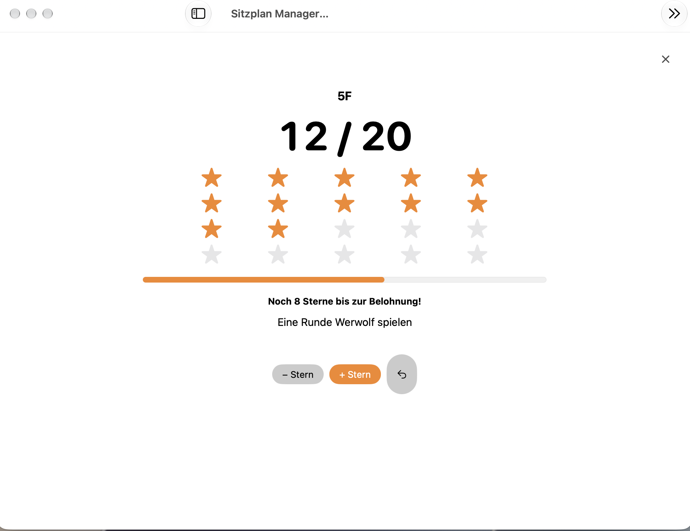

Klasse & Raum
Schüler anlegen oder importieren. Tische verschieben, drehen und an deinen Raum anpassen.
Digitale Sitzpläne für Lehrkräfte erstellen, Sitzordnungen auslosen, Klassen organisieren und Unterrichtswerkzeuge an einem Ort nutzen – mit Sitzplan Manager Pro für Mac und iPad.
Zur Anleitung ↗ Hilfe findenSitzplan Manager Pro · für Mac & iPad
Sitzplan Manager Pro für iPad

QR-Code mit dem iPhone oder iPad scannen
Schüler anlegen oder importieren. Tische verschieben, drehen und an deinen Raum anpassen.
Sitzregeln berücksichtigen, Plätze tauschen und einzelne Schüler fixieren. Frühere Sitzpläne über den Verlauf aufrufen.
Zufallsschüler, Teams, Timer, Lernpartner, Entscheidungsrad, Noise-Meter und Sternstunden, Stundenplan und Toilettenzeiten unterstützen den Unterrichtsalltag.
Das Klassenraum-Noise-Meter ergänzt die Unterrichtswerkzeuge für Mac und iPad: Eine Ampel zeigt, wann es Zeit wird, etwas leiser zu werden.
Die Anzeige dient der Orientierung. Sie ist eine grobe Schätzung, keine geeichte oder A-bewertete Schallpegelmessung.
Noise-Meter kennenlernen →
Mit Sternstunden motivierst du deine Klasse auf dem Weg zu einer gemeinsamen Belohnung. Der aktuelle Fortschritt ist für alle gut sichtbar.
Die Sternstunden gehören zu den klassenbezogenen Unterrichtswerkzeugen.

So richtest du deine Klasse ein, verteilst Sitzplätze und nutzt die Werkzeuge im Unterricht.
Antworten zu Sitzordnung, Schülerlisten, Unterrichtswerkzeugen und Testphase.
Ja. Sitzplan Manager Pro bietet eine App für iPad und Mac, mit der du Klassenräume einrichten, Tische verschieben und Sitzplätze vergeben kannst.
Ja. Du kannst Sitzplätze auslosen, einzelne Schüler fixieren und Sitzregeln bei der Planung berücksichtigen.
Ja. Schülerlisten können angelegt oder importiert werden. Informationen zu Excel und WebUntis findest du in der Anleitung.
Unter anderem Zufallsschüler, Team-Einteilung, Timer, Lernpartner-Folien, Entscheidungsrad, Noise-Meter, Sternstunden, Stundenplan und Toilettenzeiten.
Ja. Die App bietet eine 14-tägige Testphase. Danach können die Bearbeitungsfunktionen per Einmalkauf freigeschaltet werden.
Weitere Hinweise findest du in der Anleitung und unter Support und FAQ.
Die Anleitung für Mac und iPad, Antworten auf häufige Fragen und Informationen zum Umgang mit Daten.
Sitzplan Manager Pro für iPad ist jetzt im Apple App Store verfügbar. Weitere Plattformen folgen.